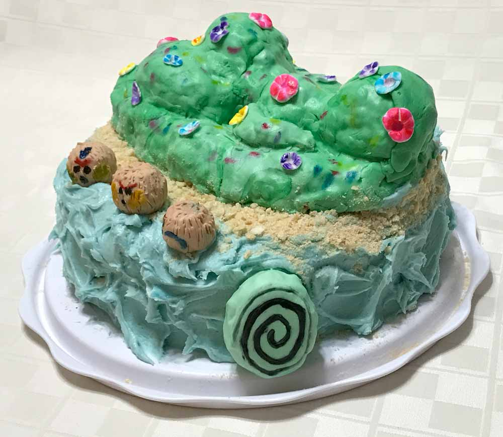
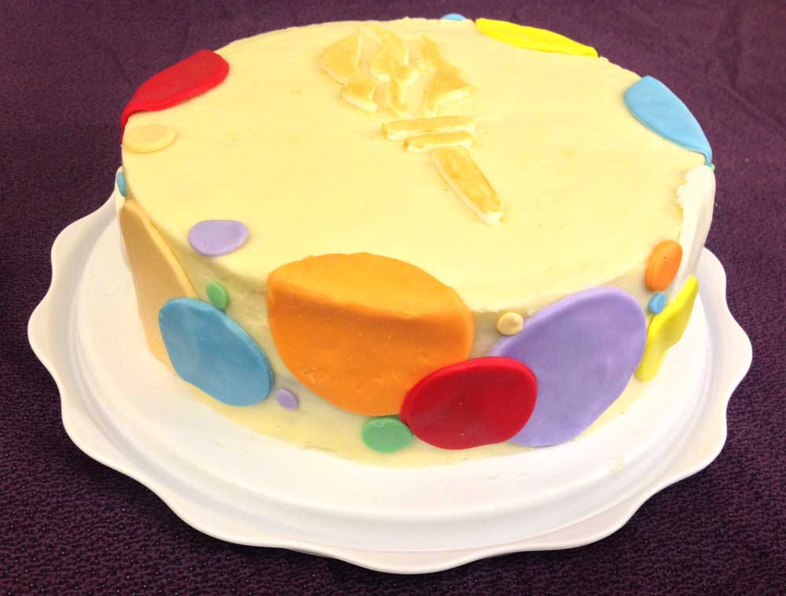
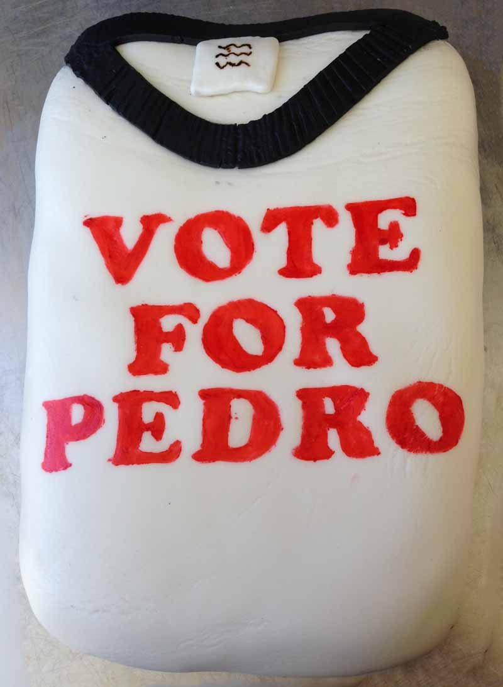
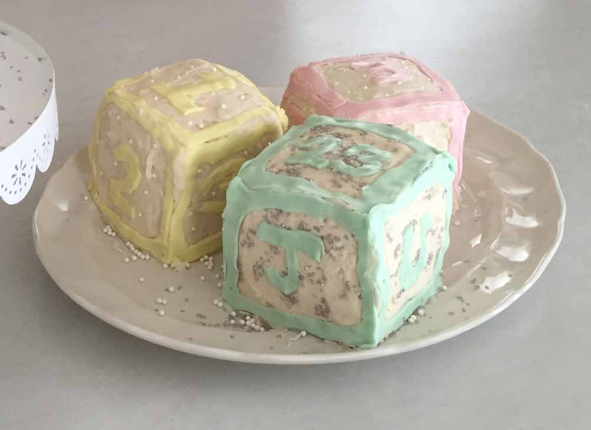

This is the one of my other paid for cakes. It was a lot of fun, because I got to carve the cake to make it look the way it does.I got paid for this one as well, and I it was for a little kid, and the parents said that he was really happy all day that he got this cool cake. It was one of the easier cakes that I did, just because I just printed out the logo onto a piece of paper and just cut it out to look good.

This is my little sisters birthday cake that I made for her 7th birthday. The tefiti island on top of it was made of rice crispie treats, and then covered with fondant, and painted to look like it had a bunch of flowers on it. These cocoanuts are the kakamora that I put on the Moana cake. They were made of rice crispie treats as well. Covered in fondant and then had to features applied by using a paint brush, and a knife for all of the little coconut hairs.I made these cute little gingerbread men for a Young Women and Young mens activity. The cookies were just from a package, but then I put some icing in a piping bag to decorate them.This is the cake that I made for one of my teachers daughters birthday. It was a really small 6 in cake, but it took me over 6 hours to do at least. The actual humpty dumpty was made of rice crispie treats, and covered in fondant. The arms and legs are something called gum paste. Gum paste hardens really hard, and so you can make things like arms and legs out of it.

I made the torch, because it is the young womens symbol, and all of the colored circles are the colors of the Young Women values.The torch is the symbol of the Lds Young Women. It is painted with golden luster dust mixed with lemon extract.This was my birthcay cake. It was the first double layer cake. I tried to marble the fondant, but I didn't do a very good job.I made this for my friends good bye party when she was moving. I had to make all of the flowers petals one by one. The frosting was cream cheese(my favorite kind).I made this for my friends good bye party when she was moving. I had to make all of the flowers petals one by one.

This was the first cake that I covered in Fondant, so it is a little wrinkly, but it was a whole lot of fun. The letters are painted on, and I had to cut out a stencil.I made this for my little sisters 5th birthday.I made this for my little sisters 5th birthday.

This is my fist shaped cake. It was really hard, because I didn't plan it out very well, but it was a lot of fun.I made this for our family 4th of July celebration this year!Star Wars BB-8 cake for my 10-year-old brother. this was my first ever cake that I did, and I think that it turned out really well.